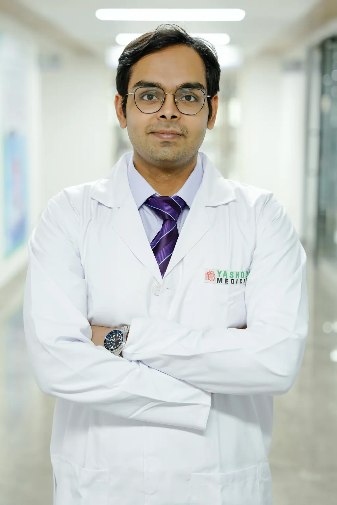
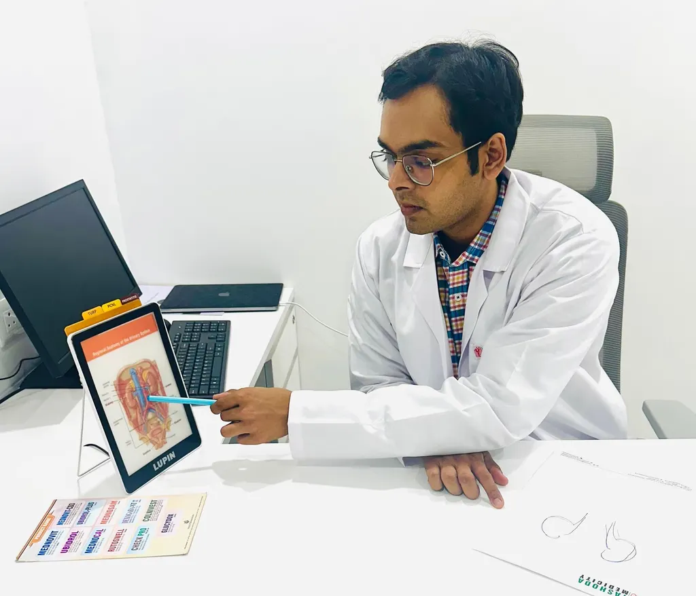
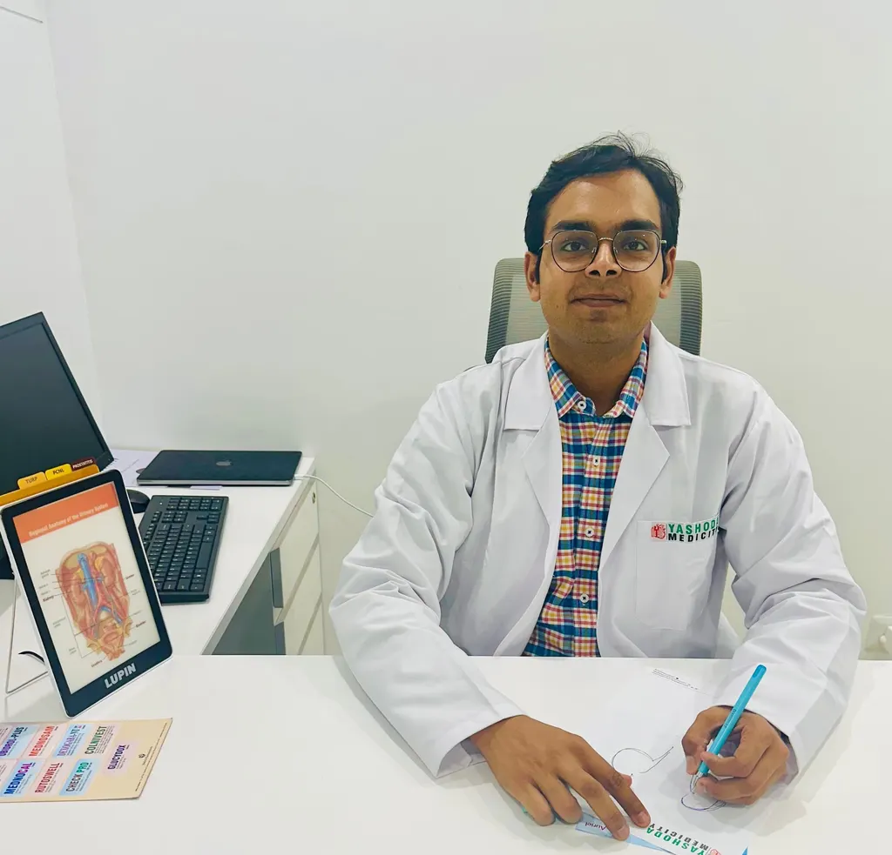

Dr. Keshav Agarwal — Urologist in Ghaziabad & Noida
M.Ch. Urology, DrNB Urology, MRCS
🏆 Dual Gold Medalist - MBBS & MS Surgery (AIIMS, New Delhi)
Consultant Urologist | Kailash Hospital, Noida & Uro-Clinic, Ghaziabad
World-Class Urological Care at Your Doorstep
Experience the rare combination of academic brilliance and surgical mastery. Dr. Keshav Agarwal brings the prestige of AIIMS training and cutting-edge robotic surgery expertise to patients across Ghaziabad and Noida.
As a dual gold medalist from AIIMS, India's most prestigious medical institution, Dr. Agarwal stands among the country's medical elite. His exceptional academic record—consistently ranking at the top of his class throughout MBBS, MS Surgery, and M.Ch. Urology—demonstrates an unparalleled commitment to excellence.
Dr. Agarwal believes in empowering patients through education. Using advanced digital tools and clear communication, he ensures every patient fully understands their condition and treatment options. Whether you're dealing with kidney stones, require a transplant, or need management of complex urological conditions, you'll receive personalized care grounded in the latest medical evidence and delivered with genuine compassion.

Dr. Agarwal uses state-of-the-art digital tools to help patients understand their condition and treatment options
Why Patients Trust Dr. Keshav Agarwal
Experience the difference that extraordinary training, pioneering research, and genuine dedication make in your urological care
Unmatched Academic Excellence
The rare distinction of being a dual AIIMS gold medalist—an achievement attained by less than 0.1% of medical graduates. Consistently ranked among the top students throughout his entire medical career, representing the pinnacle of Indian medical education.
Pioneer in Advanced Robotic Surgery
Fellowship-trained in Robotic and Minimally Invasive Urology from Max Superspeciality Hospital, one of India's premier centers. Expert in cutting-edge robotic kidney transplantation with superior precision, faster recovery, and better patient outcomes.
Internationally Recognized Researcher
Published extensively in prestigious international journals including Journal of Endourology and BMJ Case Reports. Presented groundbreaking research at American Urological Association (AUA), European Association of Urology (EAU), and multiple global conferences. Recipient of the coveted AUA Travel Fellowship 2023.
Innovator in Surgical Techniques
Developed novel surgical approaches including the cranio-caudal bull's eye technique for kidney stone surgery, currently under peer review for publication. Continues to advance the field of urology through innovation and dedicated research.
Comprehensive Expertise
Master of complex procedures including robotic kidney transplantation, urological oncology, adrenal surgery, and minimally invasive techniques. Graduated top of class in M.Ch. Urology, demonstrating exceptional knowledge and surgical skill.
Compassionate Patient-Centered Care
Combines world-class surgical expertise with genuine empathy and respect for patients. Takes time to listen, explain conditions clearly, answer all questions, and ensure patients feel comfortable and informed about their treatment journey.
Where to Find Us
Expert urological care at two convenient locations in Delhi-NCR
Kailash Hospital & Neuro Institute
Consultant Urologist
Availability
Services Available
- Robotic Surgery
- Kidney Transplantation
- Complex Urological Procedures
- Urological Oncology
- Emergency Urology Care
Uro-Clinic
Dr. Keshav Agarwal's Private Practice
Clinic Hours
Services Available
- Consultations & Follow-ups
- Diagnostic Evaluations
- Treatment Planning
- Personalized Care
Specialized Areas of Expertise
Comprehensive urological care using the most advanced surgical techniques
Robotic Surgery
Fellowship-trained in robot-assisted urological procedures including kidney transplantation, with precision and minimal invasiveness
Minimally Invasive Surgery
Expert in laparoscopic and endoscopic procedures for faster recovery and better cosmetic outcomes
Kidney Transplantation
Specialized in both extraperitoneal and transperitoneal robot-assisted kidney transplant techniques
Kidney Stone Disease
Innovative cranio-caudal bull's eye technique for percutaneous nephrolithotomy (PCNL)
Adrenal Surgery
Extensive experience in adrenalectomy for functional tumors and complex adrenal pathology
Urological Oncology
Comprehensive management of kidney cancer, bladder cancer, prostate cancer, and other urological malignancies
A Philosophy Built on Excellence and Empathy
Every patient deserves not just excellent medical care, but also genuine compassion, clear communication, and respect for their unique needs and concerns.
Dr. Agarwal's approach combines the highest standards of medical excellence with a deeply personal touch. He takes time to understand each patient's medical history, lifestyle, and treatment preferences before recommending a course of action. Complex medical conditions are explained in clear, understandable terms, ensuring patients and their families are fully informed partners in the healing process.
🎯 Evidence-Based Treatment
Every recommendation is grounded in the latest medical research and international best practices
🤝 Collaborative Decision-Making
Patients are active partners in their care, with full transparency about all treatment options
⚡ Advanced Technology
Utilizing cutting-edge robotic and minimally invasive techniques for optimal outcomes
💚 Holistic Care
Addressing not just the medical condition but also the emotional and practical aspects of treatment

Dr. Agarwal provides personalized treatment plans tailored to each patient's unique needs
Frequently Asked Questions
Common questions about urological conditions and treatment options
You can book a consultation by calling or sending a WhatsApp message to +91-9818442016. Dr. Agarwal sees patients at Uro-Clinic (Nehru Nagar, Ghaziabad) on Monday, Wednesday, and Friday mornings (9:30–11:00 AM) and Tuesday, Thursday, and Saturday evenings (6:00–8:00 PM). He is also available at Kailash Hospital, Sector 71, Noida on weekdays.
Treatment depends on the size and location of the stone. Small stones (under 5mm) may pass naturally with increased fluid intake and medications. Larger stones may require ESWL (shock wave lithotripsy), ureteroscopy (URS/RIRS), or PCNL (percutaneous nephrolithotomy). Dr. Agarwal uses minimally invasive techniques including his innovative cranio-caudal bull's eye technique for PCNL.
Yes. Dr. Keshav Agarwal performs both extraperitoneal and transperitoneal robot-assisted kidney transplantation at Kailash Hospital, Noida. Robotic transplantation offers smaller incisions, less blood loss, faster recovery, and reduced wound infection risk compared to open surgery.
Common symptoms of BPH (Benign Prostatic Hyperplasia) include frequent urination especially at night, weak urine stream, difficulty starting urination, feeling of incomplete bladder emptying, and urgency. If you experience these symptoms, consult a urologist for proper evaluation and treatment.
Dr. Keshav Agarwal is a dual gold medalist from AIIMS New Delhi (MBBS and MS Surgery). He holds M.Ch. Urology from AIIMS (graduated top of class), DrNB Urology, and MRCS from the Royal College of Surgeons of Edinburgh. He also completed a Fellowship in Robotic and Minimally Invasive Urology at Max Superspeciality Hospital, New Delhi.
Dr. Agarwal provides comprehensive urological care including kidney stone treatment (PCNL, RIRS, laser lithotripsy), robotic and minimally invasive surgery, kidney transplantation, prostate disorders (BPH, prostate cancer), urological cancers (kidney, bladder, prostate), adrenal tumors, and other complex urological conditions.
Book Your Consultation
Choose your preferred location and book instantly via WhatsApp
Instant Booking via WhatsApp
Get confirmation in minutes. Select your preferred location:
Phone
Expert Urological Consultations
Dr. Keshav Agarwal provides comprehensive consultations for:
- Kidney Stone Treatment (PCNL, RIRS, Laser Lithotripsy)
- Robotic & Minimally Invasive Surgery
- Kidney Transplantation (Living & Deceased Donor)
- Prostate Disorders (BPH, Prostate Cancer)
- Urological Cancers (Kidney, Bladder, Prostate)
- Adrenal Tumors & Complex Cases